NANDRAD Data Model Library
Version 2.0
NANDRAD
Class Hierarchy
Go to the textual class hierarchy
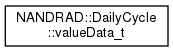
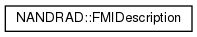
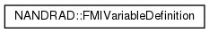
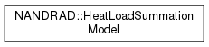
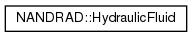
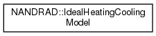
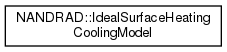
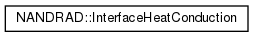
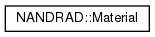
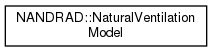
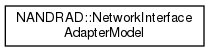
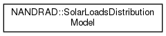
Generated on Fri Sep 3 2021 07:22:31 for NANDRAD Data Model Library by
1.8.13


 1.8.13
1.8.13